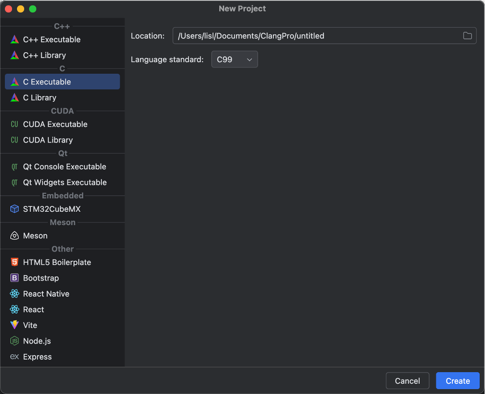
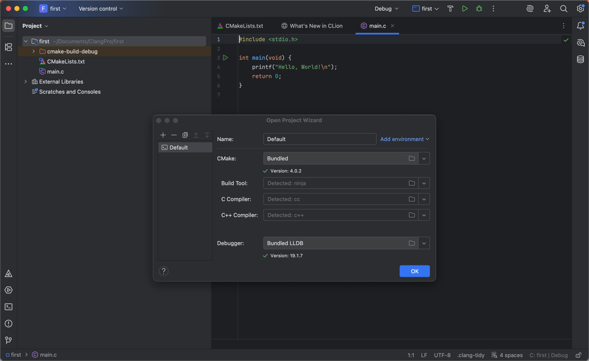
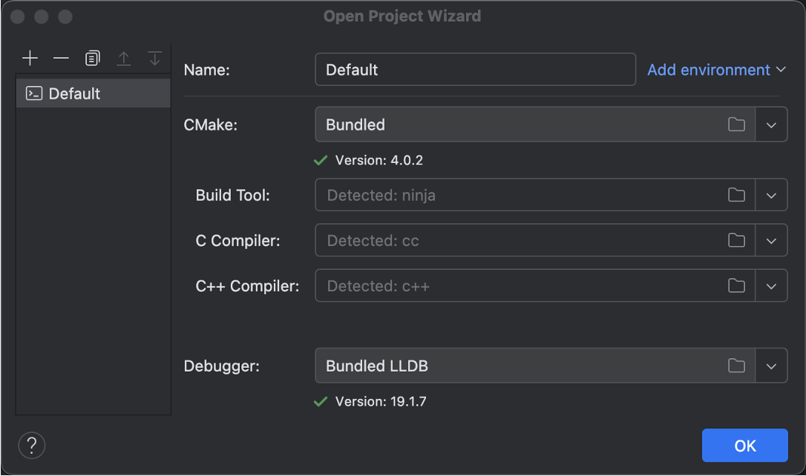

Clion安装和配置
CLion是由JetBrains公司开发的跨平台集成开发环境（IDE），专为C/C++语言开发者设计，支持Windows、MacOS和Linux操作系统。从官方地址下载安装包，根据需要选择不同版本。
1. 软件安装
下载好安装包之后，执行安装命令 ./clion.sh 即可进行安装，下面是在macOS系统上安装之后的设置。
- 在【Plugins】搜索中文汉化插件，可获取中文支持。
- 【Setting → Appearance → Theme】，设置背景颜色。
- 创建C语言项目，选择【C语言可执行文件】，C语言版本选择C99
- 首次创建项目可能会弹出项目向导，用于安装基本的编译器，选择默认已捆绑的编译器即可
  
软件可能会要求注册之后使用，或者要求输入激活码等，可以先用试用版。关于软件激活不做过多说明，支持正版。
2. 测试安装环境
- 一个C语言项目只能有一个main函数
- 在新建文件的时候，根据需要选择是否添加到项目目标，如果勾选则会在CMakeLists.txt文件的可执行目标中添加该文件名
- CMakeLists.txt文件用于管理C语言项目文件，只要修改该文件，将可以自动为每个main函数的文件添加独立的项目目标，各自识别为一个独立程序
- 修改CMakeLists.txt文件的代码，每次添加文件之后，点击刷新该文件的按钮或者在【文件】里面选择【重新加载CMake项目】
- 中文乱码：【settings→Editor→File Encodings】[Global Encoding:UTF8]、[Project Encoding:UTF8]、[Create UTF8 files: with no BOM]
# 按照书本要求设定C语言和C++版本
set(CMAKE_C_STANDARD 99)
set(CMAKE_CXX_STANDARD 20)
# 设定构建运行路径，避免污染根目录
set(CMAKE_ARCHIVE_OUTPUT_DIRECTORY ${PROJECT_SOURCE_DIR}/.archive)
set(CMAKE_LIBRARY_OUTPUT_DIRECTORY ${PROJECT_SOURCE_DIR}/.library)
set(CMAKE_RUNTIME_OUTPUT_DIRECTORY ${PROJECT_SOURCE_DIR}/.runtime)
set(EXECUTABLE_OUTPUT_PATH ${PROJECT_SOURCE_DIR}/.runtime)
set(LIBRARY_OUTPUT_PATH ${PROJECT_SOURCE_DIR}/.library)
#include_directories(${PROJECT_SOURCE_DIR}/src)
include_directories(${PROJECT_SOURCE_DIR})
# 遍历项目src目录下所有的 .c 文件，自动添加
#file(GLOB_RECURSE files src/**.c src/**.cpp)
file(GLOB_RECURSE files **.c **.cpp)
foreach (file ${files}) # 遍历所有发现的文件
get_filename_component(name ${file} NAME) # 获取文件名
add_executable(${name} ${file}) # 添加可执行文件
endforeach () # 遍历结束
# --------------------------< 使用须知 >------------------------------------
# >-----------------------------------------------------------------------
# 本文件是一个自动化的CMakeList，有以下功能：
# - 自动遍历 src 目录下的所有 .c 和 .cpp 文件，并将其编译为可执行文件。
# - 将可执行文件(即编译结果)输出到项目根目录下的 .runtime/ 目录中。
# - 将库文件输出到项目根目录下的 .library/ 目录中。
# - 将中间文件输出到项目根目录下的 .archive/ 目录中。
# >-----------------------------------------------------------------------
# 使用此CMakeList时，若要新建C/C++语言文件，请按照以下步骤：
# 1. 右键src目录(如果没有src目录，请先创建)——新建——C/C++源文件
# 2. 在弹出的对话框中，输入文件名(仅允许英文小写及下划线，不要出现空格)，
# 后缀为 ".c(C语言文件)"或".cpp(C++文件)"，切记不要勾选“添加到目标”，点击确定。
# 3. 点击 左上角横线——文件——重新加载CMake项目 。
# 注：未重载前，进入文件可能会有“不属于任何项目目标”的警告，重载后即会消失。
# 若此警告未消失，请检查文件是否在src目录下，以及文件名是否符合规范。
# >-----------------------------------------------------------------------
# 使用此CMakeList时，若运行 main() 函数代码，请直接点击函数前的绿色三角形按钮。
# 右上角的运行按钮会自动运行最近一次运行的程序，因此可能不是你想要的结果。
# ------------------------------------------------------------------------